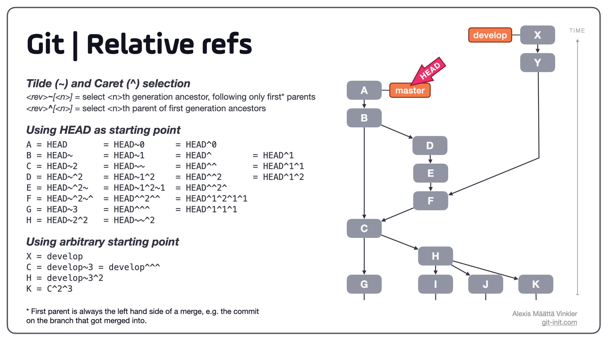
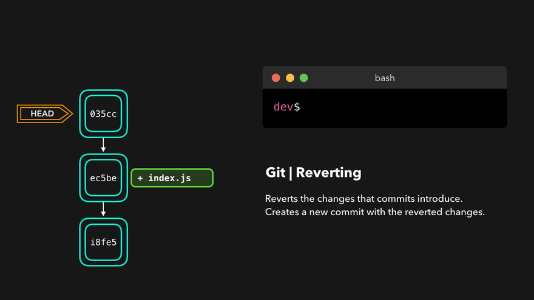
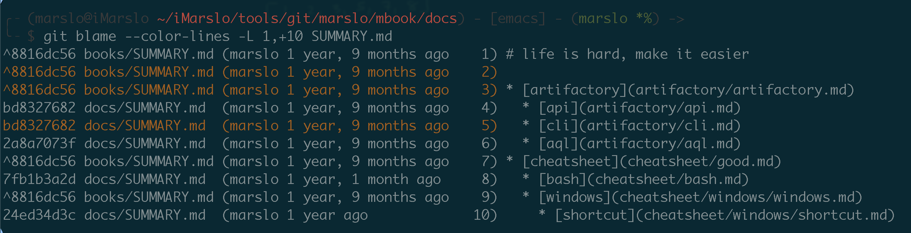
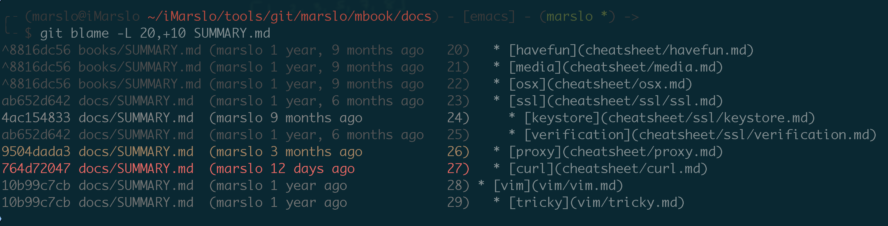

git command study and practice
Table of Contents generated with DocToc
reference:
appoint
git alias
br = branch
co = checkout
coa = commit --amend --no-edit
pl = !git --no-pager log --color --graph --pretty=tformat:'%C(red)%h%C(reset) -%C(yellow)%d%C(reset) %s %C(green)(%cr) %C(blue)<%an>%C(reset)' --abbrev-commit --date=relative --max-count=3
pls = log --color --graph --pretty=tformat:'%C(red)%h%C(reset) -%C(yellow)%d%C(reset) %s %C(green)(%cr)%C(reset) %C(blue)<%an>%C(reset)' --abbrev-commit --date=relative
fpl = log --color --graph --pretty=tformat:'%C(red)%H%C(reset) -%C(yellow)%d%C(reset) %s %C(green)(%cr)%C(reset) %C(blue)<%an>%C(reset)' --abbrev-commit --date=relative
fl = log -p --graph --color --graph
rlog = "!bash -c 'while read branch; do \n\
git fetch --all --force; \n\
git pl remotes/origin/$branch; \n\
done < <(git rev-parse --abbrev-ref HEAD) '"
specifying ranges

git reflog
git reflog reset
commit exclusions
^<rev>(caret) notation :
To exclude commits reachable from a commit, a prefix^notation is used.
E.g.^r1 r2means commits reachable from r2 but exclude the ones reachable from r1 (i.e. r1 and its ancestors)
dotted range notations
..(two-dot) range notationr1..r2: commits that are reachable from r2 excluding those that are reachable from r1 by^r1 r2
...(three-dot) symmetric difference notationr1...r2: called symmetric difference of r1 and r2
It is the set of commits that are reachable from either one of r1 (left side) or r2 (right side) but not from both
commit
get commit id
the
<value>can be:
- commit id
- branch name
HEAD,HEAD~n,HEAD^^
$ git rev-parse <value>^{commit}
get abbrev commit ids
[!NOTE] references:
format:
%H: commit hash%h: abbreviated commit hash
$ git rev-list HEAD -n 3 --abbrev=11 --abbrev-commit
446c656814d
e747154df34
22d0ee9b131
# or via `git log`
$ git log -n 3 --format='%h' --abbrev=11
# or
$ git log -3 --format='%h' --abbrev=11
446c656814
e747154df3
22d0ee9b13
get previous commit id
$ git rev-list --no-walk <commit-id>^
get next commit id
[!NOTE] references:
$ git rev-list --no-walk <commmit-id>..HEAD | tail -1
branch
get current branch
$ git branch --show-current
or
$ git rev-parse --abbrev-ref HEAD
or
$ git symbolic-ref --short HEAD
- or
$ git symbolic-ref HEAD | sed -e "s/^refs\/heads\///" - or
or$ git symbolic-ref --quiet --short HEAD || git rev-parse --short$ git name-rev --name-only HEAD
for detached branch
$ git st
HEAD detached at d4beb6ac
...
$ git branch --no-color \
--remote \
--verbose \
--no-abbrev \
--contains |
sed -rne 's:^[^/]*/([^\ ]+).*$:\1:p'
marslo/sandbox
# or
$ git branch --no-color \
--remote \
--verbose \
--no-abbrev \
--contains |
sed -rne 's:^[ \s]*origin/([^\ ]+).*$:\1:p'
or
$ git name-rev --name-only HEAD | sed -rne 's:^[ \s]*([^\]+/){2}([^~]+).*$:\2:p' # or $ git name-rev --name-only HEAD | sed -rne 's:^[ \s]*remotes/origin/([^~]+).*$:\1:p'
create empty branch
create an empty branch
$ mkdir <MY_FOLDER> && cd $_ $ git init $ git remote add origin <REMOTE_URL> $ git fetch --all --progress --force $ git checkout -b <BRANCH_NAME>push to remote
$ git add --all . $ git commit -m 'inital an empty branch' $ git push --force -u origin HEAD:<BRANCH_NAME>git alias
.gitalias:[alias] init-repo = "!f() { \ declare help=\"\"\"\ USAGE: git init-repo <REMOTE_URL> [DEFAULT_BRANCH] [LOCAL_DIR] \n\ OPT: \n\ REMOTE_URL: mandatory \n\ DEFAULT_BRANCH: optinal. default is 'master' \n\ LOCAL_DIR: optional. default is current directory: '\"$(pwd)\"' \n\ \"\"\"; \ declare remoteURL=\"$1\"; \ declare defaultBr='master'; \ declare localDir='.'; \ [ 2 -le $# ] && defaultBr=\"$2\"; \ [ 3 -eq $# ] && localDir=\"$3\"; \ if [ 0 -eq $# ] || [ 3 -lt $# ]; then \ echo \"${help}\"; \ else \ [ -d ${localDir} ] || mkdir -p ${localDir}; \ cd ${localDir} ; \ git init && \ git remote add origin ${remoteURL} && \ git fetch --all --force --quiet && \ git checkout -b ${defaultBr}; \ fi \ }; f \ "
get branch name from reversion
branch -a --contians$ git branch -a --contains a3879d3 * master remotes/origin/masteror
$ git branch -r --contains a3879d3 origin/mastername-rev$ git name-rev a3879d3 a3879d3 master~12
get upstream branch
get current
$ git rev-parse --abbrev-ref --symbolic-full-name @{u} origin/marslo- or
$ git for-each-ref --format='%(upstream)' $(git symbolic-ref -q HEAD) refs/remotes/origin/marslo - or for
meta/config
or$ git symbolic-ref -q HEAD refs/heads/meta/config $ git for-each-ref --format='%(upstream)' $(git symbolic-ref -q HEAD) refs/remotes/origin/meta/config $ git for-each-ref --format='%(upstream:short)' $(git symbolic-ref -q HEAD) origin/meta/config$ git status -bsuno ## master...origin/master
- or
get specific
$ git rev-parse --abbrev-ref gh-pages@{upstream} origin/gh-pages- or
$ git for-each-ref --format='%(upstream:short)' $(git rev-parse --symbolic-full-name meta/config) origin/meta/config
- or
get local/remote branches
- local
$ git for-each-ref --format='%(refname:short)' refs/heads/ - remote
$ git for-each-ref --format='%(refname:short)' refs/remotes/origin/
sort local branch via committerdate
references:
- How can I get a list of Git branches, ordered by most recent commit?
- sort
git branchby default$ git config --global branch.sort -committerdate
$ git for-each-ref --sort=-committerdate refs/heads/
# Or using git branch (since version 2.7.0)
$ git branch --sort=-committerdate # DESC
$ git branch --sort=committerdate # ASC
advanced usage
$ git for-each-ref \ --sort=-committerdate \ refs/heads/ \ --format='%(HEAD) %(color:yellow)%(refname:short)%(color:reset) - %(color:red)%(objectname:short)%(color:reset) - %(contents:subject) - %(authorname) (%(color:green)%(committerdate:relative)%(color:reset))'for remote
$ git for-each-ref --sort=-committerdate refs/remotes-
git-list-branches-by-date() { local current_branch=$(git rev-parse --symbolic-full-name --abbrev-ref HEAD) local normal_text=$(echo -ne '\E[0m') local yellow_text=$(echo -ne '\E[0;33m') local yellow_bg=$(echo -ne '\E[7;33m') git for-each-ref --sort=-committerdate \ --format=$' %(refname:short) \ \t%(committerdate:short)\t%(authorname)\t%(objectname:short)' \ refs/heads \ | column -t -s $'\t' -n \ | sed -E "s:^ (${current_branch}) :* ${yellow_bg}\1${normal_text} :" \ | sed -E "s:^ ([^ ]+): ${yellow_text}\1${normal_text}:" }
git alias()
[alias]
sb = "! git branch --sort=-committerdate --format='%(HEAD) %(color:red)%(objectname:short)%(color:reset) - %(color:yellow)%(refname:short)%(color:reset) - %(subject) %(color:bold green)(%(committerdate:relative))%(color:reset) %(color:blue)<%(authorname)>%(color:reset)' --color=always"
recent = "! f() { \
declare help=\"USAGE: git recent [remotes|tags] [count]\"; \
declare refs; \
declare count; \
if [ 2 -lt $# ]; then \
echo \"${help}\"; \
exit 1; \
else \
if [ 'remotes' = \"$1\" ]; then \
refs='refs/remotes/origin'; \
elif [ 'tags' = \"$1\" ]; then \
refs='refs/tags'; \
elif [ 1 -eq $# ]; then \
count=$1; \
fi; \
if [ 2 -eq $# ]; then \
count=$2; \
fi; \
fi; \
git for-each-ref \
--sort=-committerdate \
${refs:='refs/heads'} \
--format='%(HEAD) %(color:yellow)%(refname:short)%(color:reset) - %(color:red)%(objectname:short)%(color:reset) - %(contents:subject) - %(authorname) %(color:green)(%(committerdate:relative))%(color:reset)' \
--color=always \
--count=${count:=5}; \
}; f \
"
change head
reference:
check refs
$ git status warning: ignoring broken ref refs/remotes/origin/HEAD $ git symbolic-ref refs/remotes/origin/HEAD refs/remotes/origin/new_master- fix warning
or$ git symbolic-ref refs/remotes/origin/HEAD refs/remotes/origin/new_master
or$ git remote set-head origin --delete $ git remote set-head origin --auto$ git fetch --all --force $ git remote set-head origin refs/remotes/origin/new_master
status
list ignored
[!NOTE|label:references:]
status$ git status --ignored On branch master Your branch is up to date with 'origin/master'. Ignored files: (use "git add -f <file>..." to include in what will be committed) bin/ nothing to commit, working tree clean # short status $ git status --ignored --short !! bin/ $ git status --porcelain --ignored !! bin/ $ git st --ignored --untracked-files=all ## master...origin/master !! bin/cfssl !! bin/cfssl-bundle !! bin/cfssl-certinfo !! bin/cfssl-newkey !! bin/cfssl-scan !! bin/cfssljson !! bin/mkbundle !! bin/multirootcacheck-ignore$ git check-ignore * bin $ git check-ignore -v * .gitignore:4:bin bin $ git check-ignore -v $(find . -type f -print) .gitignore:4:bin ./bin/cfssl-scan .gitignore:4:bin ./bin/cfssl-certinfo .gitignore:4:bin ./bin/cfssl-bundle .gitignore:4:bin ./bin/cfssl .gitignore:4:bin ./bin/cfssl-newkey .gitignore:4:bin ./bin/multirootca .gitignore:4:bin ./bin/mkbundle .gitignore:4:bin ./bin/cfssljso $ find . -not -path './.git/*' | git check-ignore --stdin ./bin ./bin/cfssl-scan ./bin/cfssl-certinfo ./bin/cfssl-bundle ./bin/cfssl ./bin/cfssl-newkey ./bin/multirootca ./bin/mkbundle ./bin/cfssljson $ find . -path ./.git -prune -o -print | git check-ignore --no-index --stdin --verbose .gitignore:4:bin ./bin .gitignore:4:bin ./bin/cfssl-scan .gitignore:4:bin ./bin/cfssl-certinfo .gitignore:4:bin ./bin/cfssl-bundle .gitignore:4:bin ./bin/cfssl .gitignore:4:bin ./bin/cfssl-newkey .gitignore:4:bin ./bin/multirootca .gitignore:4:bin ./bin/mkbundle .gitignore:4:bin ./bin/cfssljsonls-files$ git ls-files --others --ignored --exclude-standard # or $ git ls-files -o -i --exclude-standard bin/cfssl bin/cfssl-bundle bin/cfssl-certinfo bin/cfssl-newkey bin/cfssl-scan bin/cfssljson bin/mkbundle bin/multirootca # or list only directories $ git ls-files --others --ignored --exclude-standard --directory bin/ # or from `.gitignore` file $ git ls-files --ignored --others --exclude-from=.gitignore bin/cfssl bin/cfssl-bundle bin/cfssl-certinfo bin/cfssl-newkey bin/cfssl-scan bin/cfssljson bin/mkbundle bin/multirootcaclean$ git clean -ndX Would remove bin/
log
short stat
$ git log --show-signature
# or
$ git log --shortstat
show renamed status
$ git log -M --summary | grep rename
# or
$ git log -M --summary | grep -E '^\s*rename.*{.*=>.*}'
show files and status without comments
$ git log --color --stat --abbrev-commit --date=relative --graph --submodule --format="%H"
more
# or $ git log --color --stat --abbrev-commit --date=relative --graph --submodule --format="%h %ad- %s [%an]" # or $ git log --color --stat --abbrev-commit --date=relative --graph --submodule --format='%C(red)%h%Creset %C(yellow)(%ad)%Creset %s %C(blue)<%an>%Creset'e.g.:
$ git log -3 --color --stat --abbrev-commit --date=relative --graph --submodule --format="%H" * 50ede51fcc3cf0311fd85b3e9c4a36d4beb89e69 | | devops/git/gerrit.md | 6 ++++-- | devops/git/git.md | 5 +++++ | 2 files changed, 9 insertions(+), 2 deletions(-) * 41d58dabcd0aaee33edd1de7793ffd82c7cffa89 | | SUMMARY.md | 2 +- | 1 file changed, 1 insertion(+), 1 deletion(-) * 4460a32d8fddbe7c5c434947aea153273ce215d4 | | devops/git/{gitStudy.md => git.md} | 117 ++++++++++++++++++++++++++++++++++++++++++++++++++++++++++++++++++++++++++- | 1 file changed, 116 insertions(+), 1 deletion(-)
show submodule changes
$ git submodule status
$ git log -- <submodule name>
get change from .git/objects
$ find .git/objects -type f -printf "%P\n" | sed s,/,,
get change history for deleted files
-
$ git log --all --full-history -- <path/to/file> -
$ git log --follow <path/to/file>
by contents
$ git log -S'add' --oneline -3
6f7877c2 update git for fetch more refs after cloned via --single-branch, and add tricky for vim
30ce195e add jenkins plugin jira-steps
913a7f29 update jenkins recommended plugins
by message
$ git log --grep='jira' --oneline
30ce195e add jenkins plugin jira-steps
d17dd3aa add jira api
rebase
[!TIP]


automatic edit by git rebase -i
inspired from .gitconfig & Is there a way to squash a number of commits non-interactively?
$ COUNT=$1
$ GIT_EDITOR="sed -i -e '2,$COUNT s/^pick /s /;/# This is the 2nd commit message:/d'" git rebase -i HEAD~$COUNT
[alias]
sq = ! "f() { TARGET=$1 && GIT_EDITOR=\"sed -i -e '2,$TARGET s/^pick /s /;/# This is the 2nd commit message:/,$ {d}'\" git rebase -i HEAD~$TARGET; }; f"
example

-
$ GIT_SEQUENCE_EDITOR="sed -i 's/^pick ce5efdb /edit ce5efdb /;/^pick ce6efdb /d'" git rebase -i ${SHA} or edit
$ GIT_SEQUENCE_EDITOR="sed -i -re 's/^pick 134567/e 1234567/'" git rebase -i 1234567^-
$ git -c sequence.editor='sed -i s/pick/reword/' rebase -i ${SHA}
auto rebaes
.gitconfig[alias] arebase = ! ~/.marslo/bin/arebase.sh~/.marslo/bin/arebase.sh#!/bin/bash ACTION=$1 COMMIT=$(git rev-parse --short $2) [[ "$COMMIT" ]] || exit 1 CORRECT= for A in p pick r reword e edit s squash f fixup d drop t split; do [[ $ACTION == $A ]] && CORRECT=1 done [[ "$CORRECT" ]] || exit 1 git merge-base --is-ancestor $COMMIT HEAD || exit 1 if [[ $ACTION == "drop" || $ACTION == "d" ]]; then GIT_SEQUENCE_EDITOR="sed -i -e '/^pick $COMMIT/d'" git rebase -i $COMMIT^^ elif [[ $ACTION == "split" || $ACTION == "t" ]]; then GIT_SEQUENCE_EDITOR="sed -i -e 's/^pick $COMMIT/edit $COMMIT/'" git rebase -i $COMMIT^^ || exit 1 git reset --soft HEAD^ echo "Hints:" echo " Select files to be commited using 'git reset', 'git add' or 'git add -p'" echo " Commit using 'git commit -c $COMMIT'" echo " Finish with 'git rebase --continue'" else GIT_SEQUENCE_EDITOR="sed -i -e 's/^pick $COMMIT/$1 $COMMIT/'" git rebase -i $COMMIT^^ fi
fix typo in commits
$ EDITOR="sed -i -e 's/borken/broken/g'" GIT_SEQUENCE_EDITOR="sed -i -e 's/pick/reword/g'" git rebase -i --root
or:
$ VISUAL="sed -i -e '/^[[:blank:]]*Change-Id/ d'" GIT_SEQUENCE_EDITOR="sed -i -e 's/pick/reword/g'" git rebase -i --root
or:
$ GIT_EDITOR="sed -i -e 's/kyewrod/keyword/g'" GIT_SEQUENCE_EDITOR="sed -i -e 's/pick/reword/g'" git rebase -i --root
undo
delete after push
delete only the latest commit
$ git push origin +<hash_for_delete>^:<branch>
# e.g.:
$ git pl --pretty=format:"%h" --no-patch
* cb46bdc
* 936543c
* a83ac6b
# delete cb46bdc
$ git push origin +cb46bdc^:master
delete multiple commits
revert local
$ git reset --hard HEAD~ # or $ git reset --hard HEAD^^^ # or $ git reset --hard <commit_hash> # or $ git rebase -i HEAD~<n>push to remote
$ git push [--force] origin +<branch> # e.g.: $ git push [--force] origin +master
revert deleted branches
[!TIP] references:
# find the HEAD of deleted branch
$ git log --graph --decorate $(git rev-list -g --all)
$ git checkout <sha>
$ git checkout -b /branch/name
or find out recent actions
$ git reflog --no-abbrevor find all losts
$ git fsck --full \ --no-reflogs \ --unreachable \ --lost-found | grep commit | cut -d\ -f3 | xargs -n 1 git log -n 1 --pretty=onelineshow diff
$ git log -p <sha>
revert single file to remotes
$ git checkout origin/<branch> -- <path/to/file>
revert changes in submodule
$ git submodule update -f --init
- or
$ git submodule foreach --recursive git reset --hard - or
$ git submodule update -f --recursive - or
$ git submodule foreach --recursive git reset --hard $ git submodule update --recursive --init
Git Reset vs Revert vs Checkout reference
| Command | Scope | Common use cases |
|---|---|---|
git reset |
Commit-level | Discard commits in a private branch or throw away uncommited changes |
git reset |
File-level | Unstage a file |
git checkout |
Commit-level | Switch between branches or inspect old snapshots |
git checkout |
File-level | Discard changes in the working directory |
git revert |
Commit-level | Undo commits in a public branch |
git revert |
File-level | (N/A) |
git resetviagit reflog1.5.1.5 -- `git reflog reset` git reset --hard
1.5.1.6 -- git reset --hard git reset --soft
1.5.1.7 -- git reset --hard git revert 1.5.1.8 -- git revert
change latest comments in local
$ git commit --amend
change comments in remote
$ git pl * a79d384 - (HEAD -> master, origin/master, origin/HEAD) update (11 seconds ago) <marslo> * 7cef7c7 - update (7 hours ago) <marslo> * e1d7a64 - update (7 hours ago) <marslo> # change comments on a79d384 $ git commit --amend $ git push --force-with-lease origin master # result $ git fetch --all --force $ git pl remotes/origin/master Fetching origin * ba49259 - (HEAD -> master, origin/master, origin/HEAD) update a79d384 for change comments (24 seconds ago) <marslo> * 7cef7c7 - update (7 hours ago) <marslo> * e1d7a64 - update (7 hours ago) <marslo>
change remote comments
$ git rebase -i HEAD~<n>
And then change pick to reword
example
$ git pls * 1e7d979 - (HEAD -> master, origin/master, origin/HEAD) f (24 seconds ago) <marslo> * 9b89ed7 - c (40 seconds ago) <marslo> * beb575f - d (51 seconds ago) <marslo> * 25d010d - e (57 seconds ago) <marslo> * c502e34 - b (64 seconds ago) <marslo> * 8890288 - init commit (4 minutes ago) <Marslo Jiao> $ git rebase -i HEAD~5 reword c502e34 b pick 25d010d e pick beb575f d reword 9b89ed7 c pick 1e7d979 f $ git push --force origin master # or $ git push origin +master
change root comments
$ git rebase -i --root
$ git push origin +<branch>
change author and committer
-
- go to interactive mode
$ git config --local user.name "name" $ git config --local user.email "name@email.com" $ git rebase -i <sha> - modify
picktoedit amend one by one
$ git commit --amend --no-edit --only --author="name<name@email.com>" # or $ git commit --amend --no-edit --date="$(git log -n 1 --format=%aD)" --reset-author $ git rebase --continue
- go to interactive mode
-
[!TIP] see also
- rebase onto
[alias] reauthor = !bash -c 'git rebase --onto $1 --exec \"git commit --amend --author=$2\" $1' --
$ git config --local user.name "name" $ git config --local user.email "<name@email.com>" $ git rebase --no-edit \ --onto HEAD~9 \ --exec 'GIT_COMMITTER_DATE="$(git log -n 1 --format=%aD)" \ git commit --amend \ --date="$(git log -n 1 --format=%aD)"' \ --author="name<name@email.com>" \ # or --reset-author HEAD~9 - rebase onto
check commits with author
# get commits by name
$ git log --oneline --author="name"
# get commits by email
$ git log --oneline --author="<name@email.com>"
mv
case sensitive
error with regular
git mv$ git config --global core.ignorecase true $ git mv Tig tig fatal: renaming 'confs/home/Tig' failed: Invalid argumentrenmae
$ git mv Tig temp $ git aa $ git mv temp tig $ git aa $ git st On branch master Your branch is up to date with 'origin/master'. Changes to be committed: (use "git restore --staged <file>..." to unstage) renamed: Tig/.tig/marslo.tigrc -> tig/.tig/marslo.tigrc renamed: Tig/.tigrc -> tig/.tigrc renamed: Tig/.tigrc_latest -> tig/.tigrc_latest renamed: Tig/tigrc_2.4.1_1_example -> tig/tigrc_2.4.1_1_example renamed: Tig/tigrc_Marslo -> tig/tigrc_Marslo
clean
clean untracked directory and item in .gitignore
$ git clean -dfx
quick generate .gitignore
# show result $ curl -skL https://www.gitignore.io/api/groovy # download $ curl -skL https://www.toptal.com/developers/gitignore/api/groovy,java,python,go -o .gitignore
using -f twice if you really want to remove such a directory
$ git st
On branch meta/config
Your branch is based on 'origin/meta/config', but the upstream is gone.
(use "git branch --unset-upstream" to fixup)
Untracked files:
(use "git add <file>..." to include in what will be committed)
my-sbumodule/
nothing added to commit but untracked files present (use "git add" to track)
$ git clean -dfx
Skipping repository my-submodule/
$ git clean -dffx
Removing my-submodule/
diff
diff-highlight
[!NOTE] references:
# centos8
$ rpm -ql git | grep diff-highlight
/usr/share/git-core/contrib/diff-highlight
# or ubuntu
$ dpkg -L git | grep diff-highlight
$ sudo ln -sf /usr/share/git-core/contrib/diff-highlight /usr/local/bin/diff-highlight
get difference between two branches
$ git log --left-right --graph --cherry-pick --oneline origin/<release>..origin/<dev>
- or
$ git rev-list --reverse \ --pretty="TO_TEST %h (<%ae>) %s" \ --cherry-pick \ --right-only origin/<release>...origin/<dev> \ | grep "^TO_TEST "
tag
reference :
discribe
$ git describe --tags --long <revision>
# v2.5-0-gdeadbee
# ^ ^ ^^
# | | ||
# | | |'-- SHA of HEAD (first seven chars)
# | | '--- "g" is for git
# | '----- distance : number of commits since last tag
# |
# '---------- last tag name
get distance between tags
$ git describe HEAD --tags
- or
$ git describe HEAD --all --long
get revision in particular branch
$ git tag -l --sort='creatordate' --merged <branch>
get latest tag
references:
$ git tag -l --sort='creatordate' --merged <branch> | tail -1
or
# the command can be executed in .git folder (! -is-inside-work-tree)
$ git describe --tags --abbrev=0 --always
or
$ git for-each-ref --sort=taggerdate \
--format '%(tag)' \
refs/tags |
tail -1
- to get verbose output
$ git for-each-ref --sort=taggerdate \ --format '%(tag) %(taggerdate:raw) %(taggername) %(subject)' \ refs/tags- or
$ git for-each-ref --sort=taggerdate \ --format '%(tag)_,,,_%(taggerdate:raw)_,,,_%(taggername)_,,,_%(subject)' \ refs/tags | awk 'BEGIN { FS = "_,,,_" } ; { printf "%-20s %-18s %-25s %s\n", $2, $1, $4, $3 }' - or
$ git log --tags \ --simplify-by-decoration \ --pretty="format:%ai %d" | sort - or formatted date
$ git for-each-ref --sort=taggerdate \ --format '%(tag)_,,,_%(taggerdate:raw)_,,,_%(taggername)_,,,_%(subject)' \ refs/tags | awk 'BEGIN { FS = "_,,,_" } ; { t=strftime("%Y-%m-%d %H:%M",$2); printf "%-20s %-18s %-25s %s\n", t, $1, $4, $3 }' - or git alias
tags = !"git for-each-ref \ --sort=taggerdate \ --format '%(tag)_,,,_%(taggerdate:raw)_,,,_%(taggername)_,,,_%(subject)' refs/tags \ | awk 'BEGIN { FS = \"_,,,_\" } ; { t=strftime(\"%Y-%m-%d %H:%M\",$2); printf \"%-20s %-18s %-25s %s\\n\", t, $1, $4, $3 }'"
- or
get revision from latest tag in particular branch
$ git rev-list -1 --no-patch $(git tag -l --sort='creatordate' --merged <branch> | tail -1)
show all tags for particular revision
$ git tag --points-at <revision>
- get tags for
HEAD:
or$ git tag --points-at HEAD$ git name-rev --tags --name-only $(git rev-parse <revision>) - example
$ git name-rev --tags --name-only $(git rev-parse HEAD)
get tag and distance (depth)
reference:
man of git-describe:
The hash suffix is "-g" + an unambigous abbreviation for the tip commit of parent.
The length of the abbreviation scales as the repository grows, using the approximate number of objects in the repository and a bit of math around the birthday paradox, and defaults to a minimum of 7.
$ git describe --long --tags
v1.0.0-epsilon-2-g46b7ebb
| | + -g<has>
| + distance (commits on top)
+ tag name
# or
$ git describe --dirty --tags --long
v1.0.0-epsilon-2-g46b7ebb
| | | |
\___ ___/ | + commit hash of the current commit
most + commits on top
recent
tag
or --all
$ git describe --all --long
to filter the tags
$ git describe --dirty --tags --long --match *nightly*
nightly#82-2001310818-1765-gc18894b193
sort git tags by ascending and descending semver
[!TIP] prepend "-" to reverse sort order.
- ascending :
--sort=<type>- descending :
--sort=-<type>references:
- via
v:refnameorversion:refname by created data
$ git for-each-ref --sort=creatordate --format='%(refname) %(creatordate)' refs/tags # or $ git tag --format='%(creatordate:short)%09%(refname:strip=2)' --sort=creatordate # or $ git for-each-ref --sort=taggerdate --format='%(tag) %(taggerdate) %(taggername) %(subject)' refs/tags # much better $ git for-each-ref --sort=taggerdate \ --format '%(tag)_,,,_%(taggerdate:raw)_,,,_%(taggername)_,,,_%(subject)' refs/tags | awk 'BEGIN { FS = "_,,,_" } ; { t=strftime("%Y-%m-%d %H:%M",$2); printf "%-20s %-18s %-25s %s\n", t, $1, $4, $3 }'
checkout
checkout specific commit
# make a new blank repository in the current directory
git init
# add a remote
git remote add origin url://to/source/repository
# fetch a commit (or branch or tag) of interest
# Note: the full history up to this commit will be retrieved unless
# you limit it with '--depth=...' or '--shallow-since=...'
git fetch origin <sha1-of-commit-of-interest>
# reset this repository's master branch to the commit of interest
git reset --hard FETCH_HEAD
checkout particular commit and submodules
[!TIP] references:
$ git checkout --recurse-submodules
or
# [optional] create new branch $ git branch <branch-name> <commit-id> $ git checkout <branch-name> $ git checkout <commit-id> $ git submodule init # optional $ git submodule update --recursive-
$ git clean -xfd $ git submodule foreach --recursive git clean -xfd $ git reset --hard $ git submodule foreach --recursive git reset --hard $ git submodule update --init --recursive
checkout single branch
$ git clone --single-branch --branch <branch name> url://to/source/repository [target dir]
-
$ git config remote.origin.fetch "+refs/heads/*:refs/remotes/origin/*" $ git fetch origin$ cat ~/.marslo/.gitalias [alias] # [a]dd [f]etch [r]efs afr = !bash -c 'git config --add remote.origin.fetch "+refs/heads/$1:refs/remotes/origin/$1"' $ git afr 'sandbox/marslo/*'
blame
blame in line range
-L <start>,<end>$ git blame -L 1,3 README.md a03bebd23 (marslo Nov 2 2020 1) --- a03bebd23 (marslo Nov 2 2020 2) disqus: false a03bebd23 (marslo Nov 2 2020 3) --- $ git blame -L 1,+3 README.md a03bebd23 (marslo Nov 2 2020 1) --- a03bebd23 (marslo Nov 2 2020 2) disqus: false a03bebd23 (marslo Nov 2 2020 3) ----L :<funcname>$ git blame -L :pkgInstallation belloHAKubeCluster.sh 38327eac (marslo 2019-09-17 22:10:53 +0800 test1) function pkgInstallation() { 38327eac (marslo 2019-09-17 22:10:53 +0800 test2) dockerInstallation 38327eac (marslo 2019-09-17 22:10:53 +0800 test3) k8sInstallation 38327eac (marslo 2019-09-17 22:10:53 +0800 test4) cfsslInstallation 38327eac (marslo 2019-09-17 22:10:53 +0800 test5) etcdInstallation bdfe4340 (marslo 2019-09-23 16:35:08 +0800 test6) helmInstallation 38327eac (marslo 2019-09-17 22:10:53 +0800 test7) } 38327eac (marslo 2019-09-17 22:10:53 +0800 test8) # or $ git blame -L '/pkgInstallation/,+3' belloHAKubeCluster.sh 38327eac (marslo 2019-09-17 22:10:53 +0800 test1) function pkgInstallation() { 38327eac (marslo 2019-09-17 22:10:53 +0800 test2) dockerInstallation 38327eac (marslo 2019-09-17 22:10:53 +0800 test3) k8sInstallationby keywords (
git log -S)$ git pls -S pkgInstallation belloHAKubeCluster.sh ... * 38327ea - update (2 years, 10 months ago) <marslo>
format
-s$ git blame -s README.md | head -2 a03bebd23 1) --- a03bebd23 2) disqus: false-n,--show-number$ git blame -n -L '/pkgInstallation/,+1' belloHAKubeCluster.sh 38327eac 553 (marslo 2019-09-17 22:10:53 +0800 test1) function pkgInstallation() {-f,--show-name$ git blame -f -L '/pkgInstallation/,+1' belloHAKubeCluster.sh 38327eac kubernetes/belloHAKubeCluster.sh (marslo 2019-09-17 22:10:53 +0800 test1) function pkgInstallation() {-e,--show-email[!TIP] This can also be controlled via the blame.showEmail config option.
$ git blame -e -L '/pkgInstallation/,+1' belloHAKubeCluster.sh 38327eac (<marslo@gmail.com> 2019-09-17 22:10:53 +0800 test1) function pkgInstallation() {-l$ git blame -l -L '/pkgInstallation/,+1' belloHAKubeCluster.sh 38327eac9b01d57c13d1865d58d822a81717d60f (marslo 2019-09-17 22:10:53 +0800 test1) function pkgInstallation() {--date[!TIP] check : imarslo: date format setup global in
~/.gitconfig:[blame] date="format:%Y-%m-%d %H:%M:%S %p"$ for i in iso iso-strict relative local rfc short raw human unix 'format:%c' '"format:%Y-%m-%d %H:%M:%S"'; do cmd="git blame --date=${i} -L '/pkgInstallation/,+1' belloHAKubeCluster.sh"; echo ${cmd}; eval ${cmd}; echo ""; done git blame --date=iso -L '/pkgInstallation/,+1' belloHAKubeCluster.sh 38327eac (marslo 2019-09-17 22:10:53 +0800 test1) function pkgInstallation() { git blame --date=iso-strict -L '/pkgInstallation/,+1' belloHAKubeCluster.sh 38327eac (marslo 2019-09-17T22:10:53+08:00 test1) function pkgInstallation() { git blame --date=relative -L '/pkgInstallation/,+1' belloHAKubeCluster.sh 38327eac (marslo 2 years, 10 months ago test1) function pkgInstallation() { git blame --date=local -L '/pkgInstallation/,+1' belloHAKubeCluster.sh 38327eac (marslo Tue Sep 17 22:10:53 2019 test1) function pkgInstallation() { git blame --date=rfc -L '/pkgInstallation/,+1' belloHAKubeCluster.sh 38327eac (marslo Tue, 17 Sep 2019 22:10:53 +0800 test1) function pkgInstallation() { git blame --date=short -L '/pkgInstallation/,+1' belloHAKubeCluster.sh 38327eac (marslo 2019-09-17 test1) function pkgInstallation() { git blame --date=raw -L '/pkgInstallation/,+1' belloHAKubeCluster.sh 38327eac (marslo 1568729453 +0800 test1) function pkgInstallation() { git blame --date=human -L '/pkgInstallation/,+1' belloHAKubeCluster.sh 38327eac (marslo Sep 17 2019 test1) function pkgInstallation() { git blame --date=unix -L '/pkgInstallation/,+1' belloHAKubeCluster.sh 38327eac (marslo 1568729453 test1) function pkgInstallation() { git blame --date=format:%c -L '/pkgInstallation/,+1' belloHAKubeCluster.sh 38327eac (marslo Tue Sep 17 22:10:53 2019 test1) function pkgInstallation() { git blame --date="format:%Y-%m-%d %H:%M:%S" -L '/pkgInstallation/,+1' belloHAKubeCluster.sh 38327eac (marslo 2019-09-17 22:10:53 test1) function pkgInstallation() {--color-lines[!TIP] references:
example:
[color "blame"] repeatedLines = 130 1.5.1.10 -- git blame color by lines --color-by-age[!TIP] references:
example:
[color "blame"] highlightRecent = 239, 20 month ago, 240, 18 month ago, 241, 16 month ago, 242, 14 month ago, 243, 12 month ago, 244, 10 month ago, 245, 8 month ago, 246, 6 month ago, 247, 4 month ago, 131, 3 month ago, 137, 2 month ago, 172, 1 month ago, 167, 3 weeks ago, 166, 2 weeks ago, 203, 1 week ago, 202 // others [color "blame"] highlightRecent = 237, 20 month ago, 238, 19 month ago, 239, 18 month ago, 240, 17 month ago, 241, 16 month ago, 242, 15 month ago, 243, 14 month ago, 244, 13 month ago, 245, 12 month ago, 246, 11 month ago, 247, 10 month ago, 248, 9 month ago, 249, 8 month ago, 250, 7 month ago, 251, 6 month ago, 252, 5 month ago, 253, 4 month ago, 254, 3 month ago, 231, 2 month ago, 230, 1 month ago, 229, 3 weeks ago, 228, 2 weeks ago, 227, 1 week ago, 226 1.5.1.11 -- git blame color by age
tricky
--since$ git blame --since=3.weeks -- foo # or $ git blame v2.6.18.. -- foo
for-each-ref
get refs days ago
while read revision branch commitDate; do
benchmark=$(date +%s --date="1 year ago")
# echo "benchmark: $benchmark"
if [[ commitDate -le benchmark ]]; then
git for-each-ref ${branch} --format='%(refname:short) - %(align:right,20)%(committerdate:format:%Y-%m-%d %H:%M:%S)%(end)'
fi
done < <(git for-each-ref refs/remotes/origin/sandbox --sort=committerdate --format='%(objectname) %(refname) %(committerdate:unix)')
to archive
$ git push origin refs/remotes/origin/sandbox/marslo/test:refs/remotes/archive/sandbox/marslo/test Total 0 (delta 0), reused 0 (delta 0), pack-reused 0 remote: Processing changes: refs: 1, done remote: GitMS - update replicated. To ssh://gerrit.domain.com:29418/storage/ssdfw/devops/jenkins * [new reference] origin/sandbox/marslo/test -> archive/sandbox/marslo/test-
# delete local refs $ git update-ref -d refs/remotes/origin/sandbox/marslo/test -m 'already archived in refs/remotes/archive/sandbox/marslo/test' # delete remote refs $ git push . :refs/remotes/origin/sandbox/marslo/test # or delete without `refs/remotes/` $ git push origin --delete archive/sandbox/marslo/test $ git push origin --delete origin/sandbox/marslo/test- delete via
originwill get issueinternal server error$ git push origin --force :refs/remotes/origin/sandbox/marslo/test remote: Processing changes: refs: 1, done remote: error: ref update is a no-op: DELETE: 0000000000000000000000000000000000000000 0000000000000000000000000000000000000000 refs/remotes/origin/sandbox/marslo/test To ssh://gerrit.domain.com:29418/storage/ssdfw/devops/jenkins ! [remote rejected] origin/sandbox/marslo/test (internal server error) error: failed to push some refs to 'ssh://gerrit.domain.com:29418/storage/ssdfw/devops/jenkins'
- delete via
to retrive
# fetch single ref $ git fetch origin refs/remotes/archive/sandbox/marslo/test From ssh://gerrit.domain.com:29418/storage/ssdfw/devops/jenkins * remote-tracking branch archive/sandbox/marslo/test -> FETCH_HEAD $ git checkout FETCH_HEAD HEAD is now at 749bd27d test # fetch all ref $ git fetch origin refs/remotes/archive/*:refs/archive/* remote: Counting objects: 4507, done remote: Finding sources: 100% (57/57) remote: Total 57 (delta 20), reused 49 (delta 20) Unpacking objects: 100% (57/57), 14.52 KiB | 424.00 KiB/s, done. From ssh://gerrit.domain.com:29418/storage/ssdfw/devops/jenkins * [new ref] archive/sandbox/marslo/test -> refs/archive/sandbox/marslo/test * [new ref] archive/sandbox/marslo/sandbox -> refs/archive/sandbox/marslo/sandbox * [new ref] archive/sandbox/marslo/sample -> refs/archive/sandbox/marslo/sample
format
(subject):"the subject line"%(subject:sanitize):"the-subject-line"
[!TIP]
- field names
- foramttinghttps://git-scm.com/docs/git-for-each-ref/2.21.0#Documentation/git-for-each-ref.txt---formatltformatgt
- git/t/t6300-for-each-ref.sh
- format:
%00->\0(NUL)%09->\t(tab)%0a->\n(LF)- field names:
- head :
refname:->refs/heads/masterrefname:short->masterrefname:lstrip=1->heads/masterrefname:lstrip=2->masterrefname:lstrip=-1->masterrefname:lstrip=-2->heads/masterrefname:rstrip=1->refs/headsrefname:rstrip=2->refsrefname:rstrip=-1->refsrefname:rstrip=-2->refs/headsrefname:strip=1->heads/masterrefname:strip=2->masterrefname:strip=-1->masterrefname:strip=-2->heads/masterupstream->refs/remotes/origin/masterupstream:short->origin/masterupstream:lstrip=2->origin/masterupstream:lstrip=-2->origin/masterupstream:rstrip=2->refs/remotesupstream:rstrip=-2->refs/remotesupstream:strip=2->origin/masterupstream:strip=-2->origin/masterpush->refs/remotes/myfork/masterpush:short->myfork/masterpush:lstrip=1->remotes/myfork/masterpush:lstrip=-1->masterpush:rstrip=1->refs/remotes/myforkpush:rstrip=-1->refspush:strip=1->remotes/myfork/masterpush:strip=-1->masterobjecttype->commitobjectsize->$((131 + hexlen))objectsize:disk->$disklendeltabase->$ZERO_OIDparent->''parent:short->''parent:short=1->''parent:short=10->''numparent->0object->''type->'''*objectname'->'''*objecttype'->''author->'A U Thor <author@example.com> 1151968724 +0200'authorname->'A U Thor'authoremail->'<author@example.com>'authoremail:trim->'author@example.com'authoremail:localpart->'author'tag->''tagger->''taggername->''taggeremail->''taggeremail:trim->''taggeremail:localpart->''taggerdate->''subject->'Initial'subject:sanitize->'Initial'contents:subject->'Initial'body->''contents:body->''contents:signature->''contents->'Initial'HEAD->'*'objectname->$(git rev-parse refs/heads/master)objectname:short->$(git rev-parse --short refs/heads/master)objectname:short=1->$(git rev-parse --short=1 refs/heads/master)objectname:short=10->$(git rev-parse --short=10 refs/heads/master)tree->$(git rev-parse refs/heads/master^{tree})tree:short->$(git rev-parse --short refs/heads/master^{tree})tree:short=1->$(git rev-parse --short=1 refs/heads/master^{tree})tree:short=10->$(git rev-parse --short=10 refs/heads/master^{tree})authordate->'Tue Jul 4 01:18:44 2006 +0200'committer->'C O Mitter <committer@example.com> 1151968723 +0200'committername->'C O Mitter'committeremail->'<committer@example.com>'committeremail:trim->'committer@example.com'committeremail:localpart->'committer'committerdate->'Tue Jul 4 01:18:43 2006 +0200'objectname:short=1->$(git rev-parse --short=1 refs/heads/master)objectname:short=10->$(git rev-parse --short=10 refs/heads/master)creator->'C O Mitter <committer@example.com> 1151968723 +0200'creatordate->'Tue Jul 4 01:18:43 2006 +0200'- tags:
refname->refs/tags/testtagrefname:short->testtagupstream->''push->''objecttype->tagobjectsize->$((114 + hexlen))objectsize:disk->$disklen'*objectsize:disk'->$disklendeltabase->$ZERO_OID'*deltabase'->$ZERO_OIDtree->''tree:short->''tree:short=1->''tree:short=10->''parent->''parent:short->''parent:short=1->''parent:short=10->''numparent->''type->'commit''*objecttype'->'commit'author->''authorname->''authoremail->''authoremail:trim->''authoremail:localpart->''authordate->''committer->''committername->''committeremail->''committeremail:trim->''committeremail:localpart->''committerdate->''tag->'testtag'body->''contents:body->''contents:signature->''contents-> `'Tagging at 1151968727``object->$(git rev-parse refs/tags/testtag^0)objectname->$(git rev-parse refs/tags/testtag)objectname:short->$(git rev-parse --short refs/tags/testtag)'*objectname'->$(git rev-parse refs/tags/testtag^{})tagger->'C O Mitter <committer@example.com> 1151968725 +0200'taggername->'C O Mitter'taggeremail->'<committer@example.com>'taggeremail:trim->'committer@example.com'taggeremail:localpart->'committer'taggerdate->'Tue Jul 4 01:18:45 2006 +0200'creator->'C O Mitter <committer@example.com> 1151968725 +0200'creatordate->'Tue Jul 4 01:18:45 2006 +0200'subject->'Tagging at 1151968727'subject:sanitize->'Tagging-at-1151968727'contents:subject->'Tagging at 1151968727'
date format
[!TIP] references:
format:
relativelocaldefaultiso( oriso8601)rfc( orrfc2822)shortrawformat:%Y-%m-%d %I:%M %pstrftime :
%a: Abbreviated weekday name%A: Full weekday name%b: Abbreviated month name%B: Full month name%c: Date and time representation appropriate for locale%d: Day of month as decimal number (01 – 31)%H: Hour in 24-hour format (00 – 23)%I: Hour in 12-hour format (01 – 12)%j: Day of year as decimal number (001 – 366)%m: Month as decimal number (01 – 12)%M: Minute as decimal number (00 – 59)%p: Current locale's A.M./P.M. indicator for 12-hour clock%S: Second as decimal number (00 – 59)%U: Week of year as decimal number, with Sunday as first day of week (00 – 53)%w: Weekday as decimal number (0 – 6; Sunday is 0)%W: Week of year as decimal number, with Monday as first day of week (00 – 53)%x: Date representation for current locale%X: Time representation for current locale%y: Year without century, as decimal number (00 – 99)%Y: Year with century, as decimal number%%: Percent sign%z,%Z: Either the time-zone name or time zone abbreviation, depending on registry settings
how to use
$ git for-each-ref --sort=-taggerdate refs/tags \ --format='%(committerdate)' Mon Aug 30 21:50:57 2021 +0800 $ git for-each-ref --sort=-taggerdate refs/tags \ --format='%(committerdate:relative)' 9 months ago $ git for-each-ref --sort=-taggerdate refs/tags \ --format='%(committerdate:raw)' 1630331457 +0800 $ git for-each-ref --sort=-taggerdate refs/tags \ --format='%(committerdate:iso)' 2021-08-30 21:50:57 +0800 $ git for-each-ref --sort=-taggerdate refs/tags \ --format='%(committerdate:rfc)' Mon, 30 Aug 2021 21:50:57 +0800 $ git for-each-ref --sort=-taggerdate refs/tags \ --format='%(committerdate:local)' Mon Aug 30 21:50:57 2021 $ git for-each-ref --sort=-taggerdate refs/tags \ --format='%(committerdate:format:%Y-%m-%d %I:%M %p)' 2021-08-30 09:50 PM $ git for-each-ref --sort=-taggerdate refs/tags \ --format='%(committerdate:format:%Y-%m-%d %H:%M:%S)' 2021-08-30 21:50:57
color
[!TIP] usage:
%(color:<color_name>)%(color:reset)
example
$ git for-each-ref --sort=-taggerdate refs/tags \ --format='%(color:yellow)%(committerdate:iso)%(color:reset)' \ --color =always 2021-08-30 21:50:57 +0800 $ git for-each-ref --sort=-taggerdate refs/tags \ --format='%(color:blue)%(committerdate:iso)%(color:reset)' \ --color=always 2021-08-30 21:50:57 +0800
condition
[!TIP]
%(if)...%(then)...%(else)...%(end)%(align:<number>,left) ... %(end)
example
$ git for-each-ref --sort=-taggerdate refs/tags \ --format='%(if)%(committerdate)%(then)%(committerdate:format:%Y-%m-%d %I:%M %p)%(else)%(taggerdate:format:%Y-%m-%d %I:%M %p)%(end)' 2021-08-30 09:50 PM $ git for-each-ref --sort=-taggerdate refs/tags \ --format='%(align:left,50)[%(objecttype) : %(refname:short)]%(end) (%(committerdate:format:%Y-%m-%d %H:%M)) <%(committername)>' \ --color \ --count=10 [commit : sandbox/marslo/tag-1] (2021-08-30 21:50) <marslo>
alias
[alias]
### [p]retty [t]ag
pt = "!git for-each-ref --sort=-taggerdate refs/tags --format='%(color:red)%(objectname:short)%(color:reset) - %(align:left,38)%(color:bold yellow)[%(objecttype) : %(refname:short)]%(color:reset)%(end) %(subject) %(color:green)(%(if)%(taggerdate)%(then)%(taggerdate:format:%Y-%m-%d %H:%M)%(else)%(committerdate:format:%Y-%m-%d %H:%M)%(end))%(color:reset) %(color:blue)%(if)%(taggername)%(then)<%(taggername)>%(else)<%(committername)>%(end)%(color:reset)' --color --count=10"
pts = "!git for-each-ref --sort=-taggerdate refs/tags --format='%(color:red)%(objectname:short)%(color:reset) - %(color:bold yellow)[%(objecttype) : %(refname:short)]%(color:reset) - %(subject) %(color:green)(%(if)%(taggerdate)%(then)%(taggerdate:format:%Y-%m-%d %H:%M)%(else)%(committerdate:format:%Y-%m-%d %H:%M)%(end))%(color:reset) %(color:blue)%(if)%(taggername)%(then)<%(taggername)>%(else)<%(committername)>%(end)%(color:reset)' --color"
### [p]retty [b]ranch
pb = "! git for-each-ref refs/heads refs/remotes --sort=-committerdate --format='%(color:red)%(objectname:short)%(color:reset) - %(color:bold yellow)%(committerdate:format:%Y-%m-%d %H:%M:%S)%(color:reset) - %(align:left,20)%(color:cyan)<%(authorname)>%(color:reset)%(end) %(color:bold red)%(if)%(HEAD)%(then)* %(else) %(end)%(color:reset)%(refname:short)' --color --count=10"
pbs = "! git for-each-ref refs/heads refs/remotes --sort=-committerdate --format='%(color:red)%(objectname:short)%(color:reset) - %(color:bold yellow)%(committerdate:format:%Y-%m-%d %H:%M:%S)%(color:reset) - %(align:left,20)%(color:cyan)<%(authorname)>%(color:reset)%(end) %(color:bold red)%(if)%(HEAD)%(then)* %(else) %(end)%(color:reset)%(refname:short)' --color"